Readiness
Promising, not finished
The app adapts by size class and uses native containers. The remaining risk is concentrated in orientation policy and column economics.
Trawl already has the right adaptive foundation. Real Duo simulator passes show the app selecting its regular split correctly, but full-open and half-open layouts both expose the same pressure point: the sidebar becomes an overlay and leaves the middle column crowded.
TabView outside, balanced NavigationSplitView inside.The good news is structural: this is refinement work, not a navigation rewrite.
userInterfaceIdiom checks misclassify an open Duo as a narrow phone; two change behavior and one changes padding.Proceed with a focused Duo polish tranche. Keep the existing root architecture. Fix the two blockers, tune column economics, then validate the shared edit/search/notification chrome across poses before introducing any fold-specific API.
Do not add model detection or a parallel “Duo UI.” The same hierarchy should survive open, close, rotation, and Split View.
The matrix separates what the simulator demonstrates from what source inspection establishes.
| Surface | Observed / expected behavior | Assessment |
|---|---|---|
| Outer portrait | Compact tabs, prominent Search, system bottom chrome. | Baseline works |
| Outer landscape / tent | Required Duo scenario, but excluded by phone orientation metadata. | Blocked |
| Inner fully open | Observed on Duo simulator: regular split activates; content + detail remain stable and the sidebar presents as an overlay over the list. | Works with trade-off |
| Inner 50/50 Split View | Compact width should return to tabs while retaining regular height. | Architecture aligned |
| Partially folded | Observed on Duo simulator: the same regular split remains active. The list gets more usable width than full-open, but the sidebar still overlays it and the detail column remains visible at right. | Crowded overlay |
| Vertical bars | System containers are eligible; text-only Cancel/Save/Close actions remain horizontal by platform rule. | Review shared toolbar |
Fixture-backed captures keep the app populated and deterministic. Every Duo image below is from the dedicated simulator’s inner display; physical-device material is intentionally excluded.
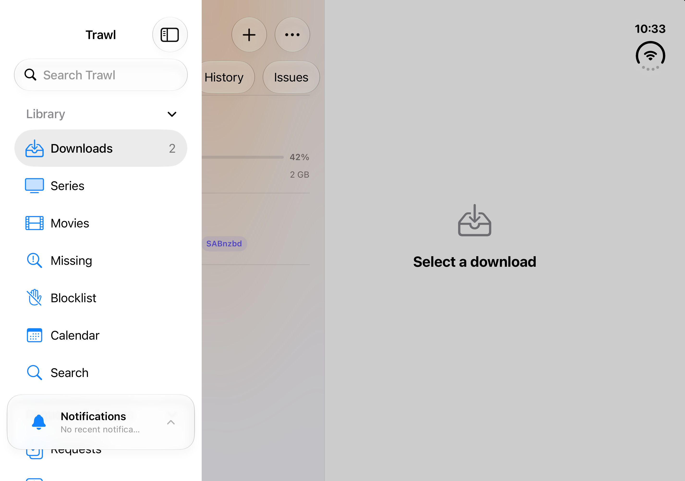
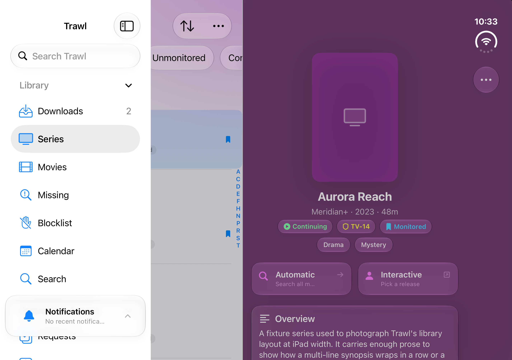
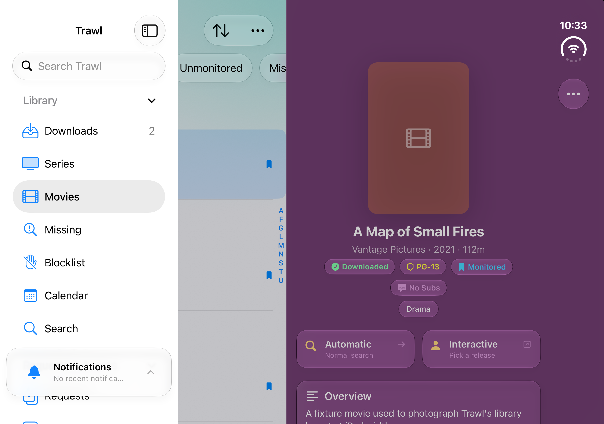
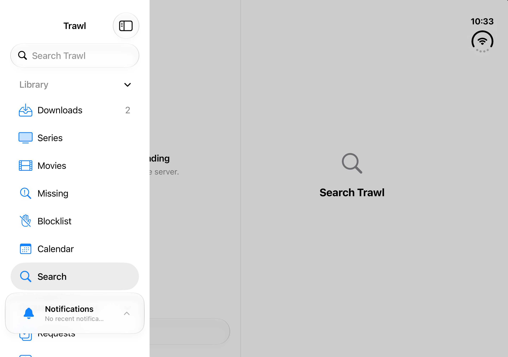
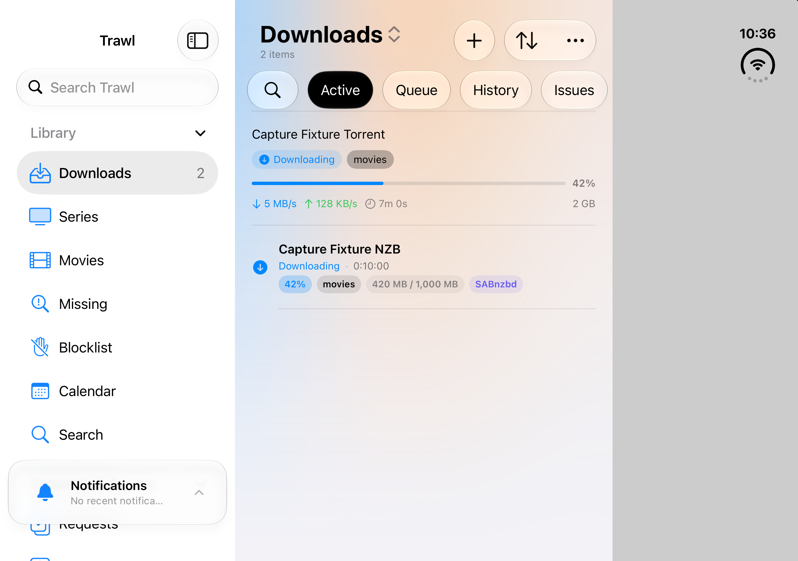
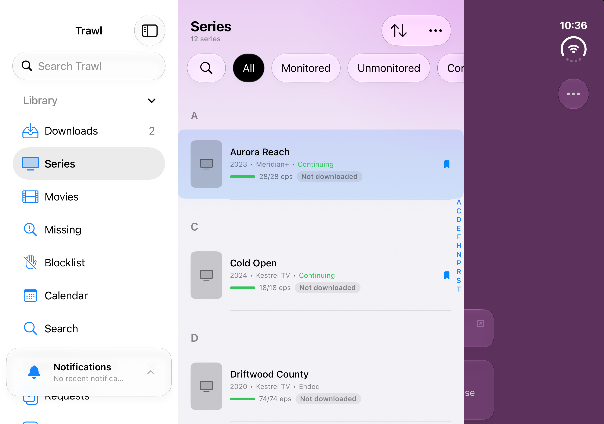
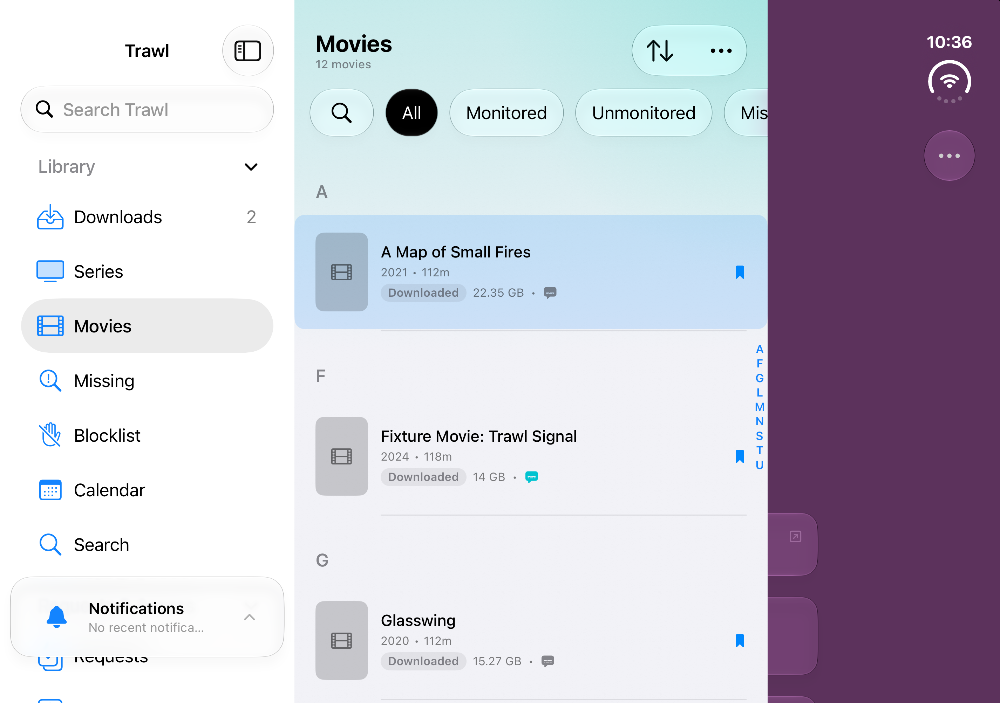
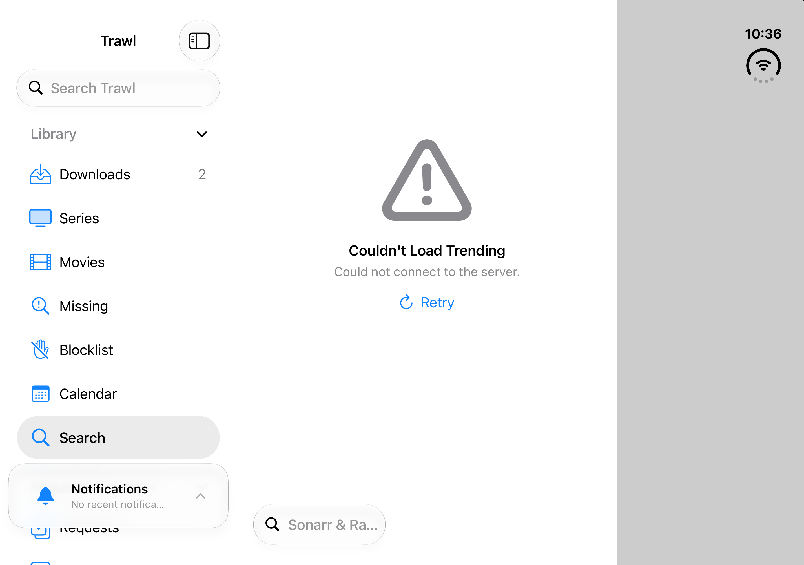
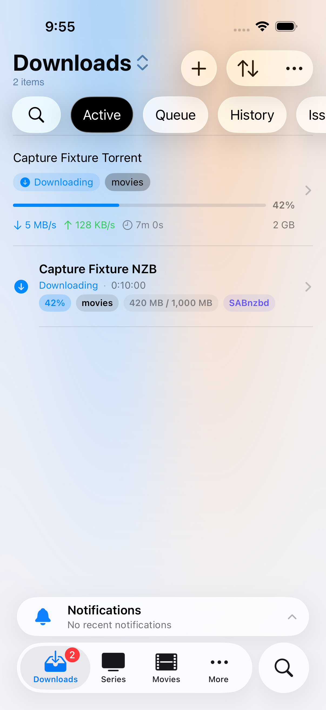
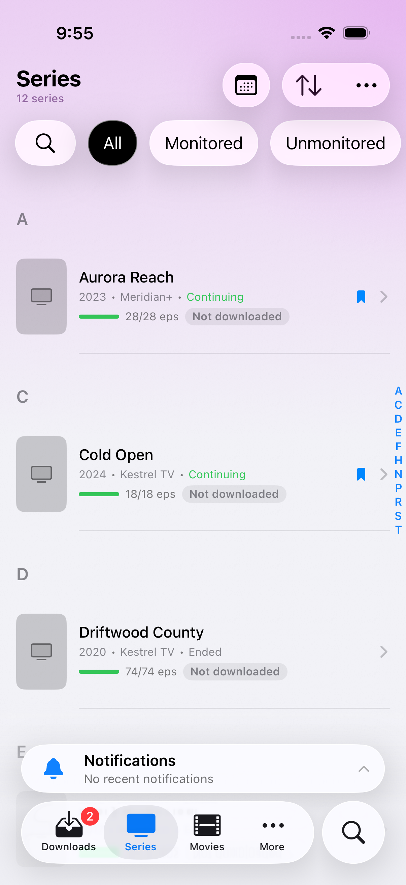
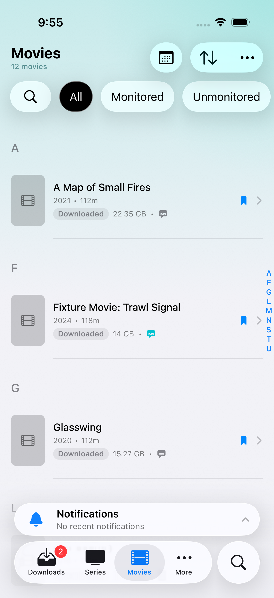
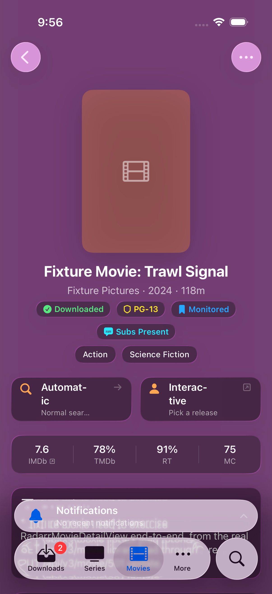
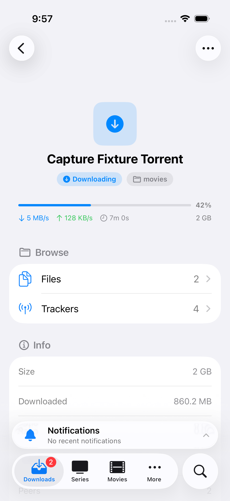
horizontalSizeClass chooses compact tabs or the regular split. That matches Duo’s actual contract and also covers inner Split View.
TabView, NavigationStack, and a balanced three-column NavigationSplitView inherit system fold and vertical-bar behavior.
No Duo-model, orientation, or UIScreen.main branching appeared in the root layout scan. The layout remains portable.
Priority reflects user impact and architectural risk, not estimated implementation time.
The phone target declares portrait only. Duo guidance explicitly calls for outer landscape because the closed device may be used in tent/stand positions. Until this changes, one of the primary poses cannot be audited or used.
An open Duo is still .phone. The Media Server row set and sheet-search placement therefore retain phone choices on a large, regular-width inner display; a shared prominent-button modifier also keeps phone padding. Base these choices on available width or presentation context.
Sidebar 220 + content 390 + detail 400 already totals 1,010 points before dividers. In both captured poses SwiftUI keeps content + detail and presents the sidebar as an overlay. Choose that behavior deliberately, or tune minima and column visibility so all three regions can coexist without reducing the list to a sliver.
The accessory is system-hosted, which is good, but it combines with the tab bar into a tall persistent stack on compact screens and obscures lower sidebar destinations on both Duo inner poses. Verify minimized, expanded, vertical-bar, and folded states.
Cancel, Close, and Save are text-only. Platform behavior keeps text-only items horizontal while icon-bearing items can move vertical. The lifecycle is correct; the audit question is whether the resulting two-axis chrome remains balanced in narrow/half-fold states.
Multiple scenes are disabled. Duo can create additional windows only on the inner display, but this is an enhancement—not a readiness blocker. Revisit after the single-window pose work is stable.
One small tranche should be enough to turn this audit into a production plan.
Add phone landscape support. Replace the two idiom checks with size/presentation-aware decisions. Add focused navigation coverage.
Choose explicitly between a stable content+detail pair and a narrower three-column presentation. Validate real sidebar rows, not empty scaffolding.
Audit notifications, edit toolbars, search placement, sheets, alerts, and safe-area asymmetry in closed, vertical-bar, and partial-fold poses.
main to the newest branch tip and pushed it.iphone-duo-polish from that exact commit.Trawl Duo Audit simulator, then ran fixture-backed full-open and partially open passes plus a compact proxy pass.This is an audit, not an implementation. No product source was modified. Physical-device captures and interaction were excluded. Outer landscape remains source-audited rather than runtime-audited because the current phone metadata blocks it. Fold-specific APIs such as reservedRegions and ArrangementView are not recommended merely for device detection; they should be introduced only where custom non-scrolling UI demonstrably collides with an active fold or camera region.
Primary guidance: Axiom · iPhone Duo.